미국 브랜드 267
미국에서 시작한 브랜드 267개를 로고와 함께 모았습니다. 수록 기준은 검수된 브랜드 설명이나 공식 웹사이트가 일치하는 위키데이터 개체에서 기원 국가가 확인된 경우로 한정했습니다.
다른 국가 보기
국가별 전체 →산업별로는 미디어·엔터테인먼트 111개, 기술·전자 37개, 브랜드·비즈니스 34개, 식음료 22개 순입니다. 설립연도가 확인된 브랜드는 245개이며 가장 오래된 곳은 1810년, 가장 최근은 2023년에 시작했습니다. 시기별로는 1900년 이전 21개, 1900~1949년 50개, 1950~1999년 131개, 2000년 이후 43개입니다. 수록 자료로는 로고 이미지 245개, 로고 변천 자료 28개, 연혁 타임라인 56개를 갖췄습니다. 이 가운데 186개는 공식 웹사이트가 일치하는 위키데이터 개체로 연결해 두었습니다.
미국 브랜드 목록
 제록스XEROX미국 · 1906년
제록스XEROX미국 · 1906년제록스(Xerox)는 1906년 미국에서 창립해 제로그래피 기반 복사기로 사무 문서 산업을 개척한 문서장비 기업이다.
시스코 시스템즈(Cisco Systems)는 라우터·스위치 등 네트워킹 장비와 사이버보안·협업 솔루션을 개발하는 미국의 IT 기업이다.
 말보로Marlboro미국 · 1924년
말보로Marlboro미국 · 1924년말보로(Marlboro)는 필립 모리스가 1924년 도입한 미국의 담배 브랜드이다.
 어그UGG미국 · 1978년
어그UGG미국 · 1978년UGG(어그)는 미국 데커스 브랜즈 산하의 양가죽 부츠로 유명한 신발 브랜드이다.
 뉴발란스New Balance미국 · 1906년
뉴발란스New Balance미국 · 1906년뉴발란스(New Balance)는 미국 보스턴에 기반을 둔 비상장 운동화·스포츠 의류 기업이다.
 페덱스FedEx미국 · 1971년
페덱스FedEx미국 · 1971년페덱스(FedEx)는 미국 멤피스에 본사를 둔 글로벌 특송·물류 기업이다.
 오픈AIOpen AI미국 · 2015년
오픈AIOpen AI미국 · 2015년OpenAI는 미국의 인공지능 연구·개발 기업으로, 대화형 AI 서비스 ChatGPT를 비롯한 생성형 AI 제품으로 널리 알려져 있다.
버드와이저(Budweiser)는 아돌푸스 부시가 1876년 출시한 미국의 아메리칸 라거 맥주 브랜드이다.
 어도비Adobe미국 · 1982년
어도비Adobe미국 · 1982년어도비(Adobe)는 1982년 설립된 미국의 소프트웨어 기업으로, 포토샵(Photoshop)을 비롯한 크리에이티브 제작 도구와 구독형…
 써브웨이Subway미국 · 1965년
써브웨이Subway미국 · 1965년써브웨이(Subway)는 1965년 미국에서 시작된 서브마린 샌드위치 프랜차이즈이다.
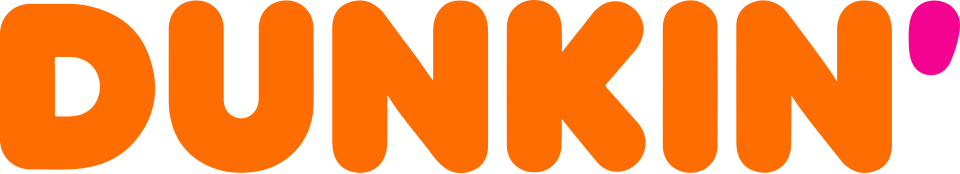
던킨Dunkin'미국 · 1950년던킨(Dunkin')은 1950년 미국 매사추세츠주 퀀시에서 문을 연 커피·도넛 체인으로, 창업자 윌리엄 로젠버그가 1948년 시작한 '오픈…
 토리 버치Tory Burch미국 · 2004년
토리 버치Tory Burch미국 · 2004년토리 버치(Tory Burch)는 2004년 디자이너 토리 버치가 설립한 미국 패션 브랜드이다.
 팬아메리칸 월드 항공Pan Am미국 · 1927년
팬아메리칸 월드 항공Pan Am미국 · 1927년팬암(Pan American World Airways)은 1927년부터 1991년까지 운항한 미국의 항공사로, 한때 미국의 비공식 국적기로…
노스페이스(The North Face)는 1966년 미국에서 창립한 VF 코퍼레이션 산하의 아웃도어 의류·장비 브랜드이다.
 에스티 로더ESTÉE LAUDER미국 · 1946년
에스티 로더ESTÉE LAUDER미국 · 1946년에스티 로더(Estée Lauder)는 1946년 미국에서 창립된 프레스티지 화장품 브랜드이자 글로벌 뷰티 그룹이다.
 도미노피자Domino's Pizza미국 · 1960년
도미노피자Domino's Pizza미국 · 1960년도미노피자(Domino's Pizza)는 1960년 미국에서 시작된 글로벌 피자 배달·테이크아웃 프랜차이즈이다.
 양키캔들Yankee Candle미국 · 1969년
양키캔들Yankee Candle미국 · 1969년양키캔들(Yankee Candle)은 1969년 미국에서 시작된 향초 제조·소매 브랜드이다.
 켈로그KELLOGG’s미국 · 1906년
켈로그KELLOGG’s미국 · 1906년켈로그(Kellogg's)는 윌 키스 켈로그가 1906년 설립한 미국의 아침식사 시리얼 브랜드이다.
 하인즈Heinz미국 · 1869년
하인즈Heinz미국 · 1869년하인즈(Heinz)는 1869년 헨리 J.
바세린(Vaseline)은 페트롤리움 젤리를 기반으로 한 미국의 스킨케어 브랜드이다.
 피자헛Pizza Hut미국 · 1958년
피자헛Pizza Hut미국 · 1958년피자헛(Pizza Hut)은 1958년 미국 캔자스에서 창립된 세계 최대 규모의 피자 프랜차이즈 브랜드이다.
 이스턴 항공Eastern Airlines미국
이스턴 항공Eastern Airlines미국이스턴 항공(Eastern Air Lines)은 1991년까지 운항한 미국의 항공사다.
인텔은 보이지 않는 부품을 소비자가 인식하는 브랜드로 만든 대표적 사례다.
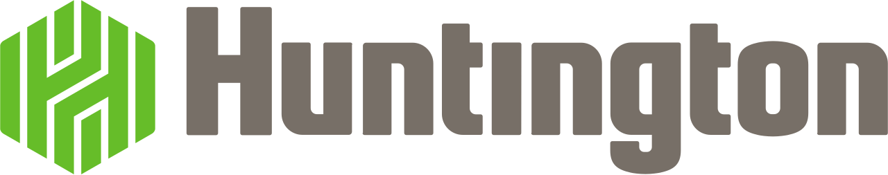
헌팅턴 뱅크Huntington Bank미국 · 1866년헌팅턴 뱅크(The Huntington National Bank)는 미국 오하이오주 컬럼버스에 본사를 둔 지역 은행으로, 1866년 설립되어…
 그라자Graza미국 · 2022년
그라자Graza미국 · 2022년그라자(Graza)는 미국의 D2C 올리브오일 브랜드로, 2022년 1월 출시 이후 밝은 녹색의 짜는 스퀴즈 보틀과 단일산지 스페인…
 트립어드바이저Tripadvisor미국 · 2000년
트립어드바이저Tripadvisor미국 · 2000년트립어드바이저(Tripadvisor)는 전 세계 여행자가 직접 남긴 후기를 모아 숙소·음식점·관광지·체험을 비교하고 예약하도록 돕는 미국의…
 피어스페이스Peerspace미국
피어스페이스Peerspace미국피어스페이스는 미국에서 출발한 시간 단위 공간 대여 마켓플레이스로, 이벤트·회의·촬영·파티 등 목적에 맞는 독특한 공간을 시간당 단위로 예약할…
 랄프 로렌Ralph Lauren미국 · 1967년
랄프 로렌Ralph Lauren미국 · 1967년랄프 로렌(Ralph Lauren)은 1967년 미국에서 설립된 럭셔리 라이프스타일·패션 브랜드이다.
더 하트퍼드The Hartford미국 · 1810년더 하트퍼드는 1810년 미국 코네티컷주 하트퍼드에서 설립된 미국의 대표적 보험·금융 기업이다.
 비자Visa미국 · 1958년
비자Visa미국 · 1958년비자는 전 세계 카드 결제를 중계하는 미국의 결제 네트워크 기업이다.
 웨스팅하우스 일렉트릭Westinghouse미국 · 1886년
웨스팅하우스 일렉트릭Westinghouse미국 · 1886년웨스팅하우스 일렉트릭은 1886년 조지 웨스팅하우스가 설립한 미국의 전기·산업 제조 기업으로, 본사는 펜실베이니아주 피츠버그에 두었다.
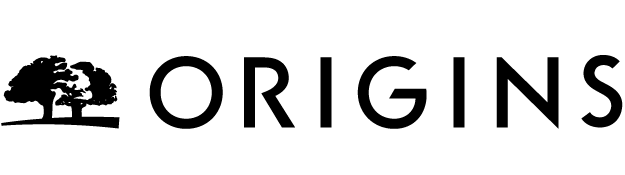
오리진스ORIGINS미국 · 1990년오리진스(Origins)는 에스티로더가 1990년 출범시킨 미국의 자연주의 스킨케어 브랜드이다.
 이탈리Eataly미국 · 2004년
이탈리Eataly미국 · 2004년이탈리(Eataly)는 이탈리아 고품질 식재료의 판매·취식·학습을 한 지붕 아래 결합한 이탈리아식 식료품 마켓이다.
 카벨라스Cabela's미국 · 1961년
카벨라스Cabela's미국 · 1961년카벨라스(Cabela's)는 사냥·낚시·캠핑 등 아웃도어 레크리에이션 용품을 판매하는 미국 소매업체이다.
 블랭크 스트리트 커피Blank Street Coffee미국 · 2020년
블랭크 스트리트 커피Blank Street Coffee미국 · 2020년블랭크 스트리트 커피는 2020년 미국 뉴욕 브루클린에서 출발한 소형 점포 중심의 테크 기반 커피 체인이다.
 일렉트로닉 아츠Electronic Arts미국 · 1982년
일렉트로닉 아츠Electronic Arts미국 · 1982년일렉트로닉 아츠(EA)는 1982년 설립된 미국의 비디오 게임 기업으로, 캘리포니아 레드우드시티에 본사를 둔다.
 코인베이스Coinbase미국 · 2012년
코인베이스Coinbase미국 · 2012년코인베이스(Coinbase)는 2012년 미국 샌프란시스코에서 설립된 암호화폐 거래 플랫폼으로, 비트코인을 비롯한 디지털 자산을 일반 사용자가…
 페이팔Paypal미국 · 1998년
페이팔Paypal미국 · 1998년페이팔은 1998년 미국에서 출발해 온라인 송금과 결제를 대중화한 핀테크 기업으로, 이베이 거래의 표준 결제 수단으로 성장한 뒤 독립 상장해…
베네피트benefit미국 · 1976년베네핏 코스메틱스(Benefit Cosmetics)는 1976년 쌍둥이 자매 진·제인 포드가 미국 샌프란시스코에서 창업한 화장품 브랜드로,…
 스테이플스Staples미국 · 1986년
스테이플스Staples미국 · 1986년스테이플스(Staples)는 미국에 본사를 둔 사무용품 전문 소매 기업이다.
 세븐업7up미국
세븐업7up미국세븐업은 미국에서 탄생한 레몬라임 향 무카페인 탄산음료로, 맑고 투명한 액체와 청량한 산미가 특징이다.
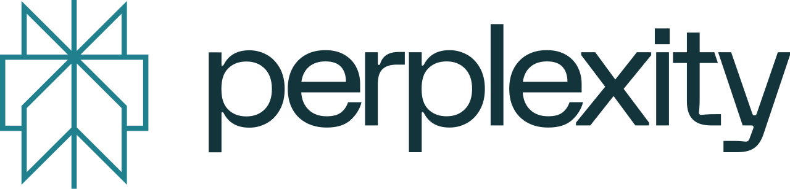
퍼플렉시티 AIPerplexity미국퍼플렉시티 AI는 미국 샌프란시스코에 본사를 둔 AI 기반 대화형 검색 서비스로, 질문에 직접 답하면서 그 근거가 된 출처를 함께 인용하는…
 바비브라운BOBBI BROWN미국 · 1991년
바비브라운BOBBI BROWN미국 · 1991년바비브라운(Bobbi Brown)은 자연스러운 아름다움을 강조하는 미국의 메이크업 브랜드이다.
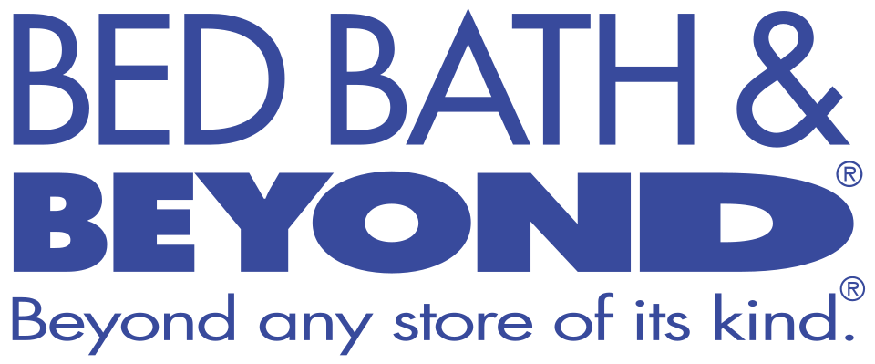
베드 베스 앤드 비욘드Bed Bath & Beyond미국 · 1997년베드 배스 앤드 비욘드(Bed Bath & Beyond)는 침구·욕실·주방 등 가정용품을 판매했던 미국의 홈굿즈 소매 체인이다.
 프레임워크Framework미국 · 2019년
프레임워크Framework미국 · 2019년프레임워크는 2019년 미국에서 설립된 모듈형 노트북 제조 기업으로, 사용자가 직접 부품을 교체하고 업그레이드할 수 있는 수리 가능한 컴퓨터를…
 타파웨어Tupperware미국 · 1946년
타파웨어Tupperware미국 · 1946년터퍼웨어(Tupperware)는 발명가 얼 터퍼가 폴리에틸렌 밀폐용기를 개발해 1946년 선보인 미국의 가정용 식품 보관용기 브랜드다.
 투미TUMI미국 · 1975년
투미TUMI미국 · 1975년투미(TUMI)는 1975년 찰리 클리퍼드가 미국에서 설립한 프리미엄 여행가방·비즈니스 백 브랜드다.
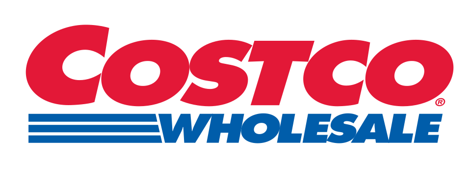
코스트코Costco미국 · 1983년코스트코(Costco)는 연회비 회원제로 운영되는 미국의 다국적 창고형 대형 할인 유통업체이다.
전체 목록
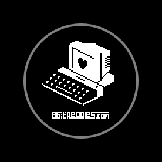
8bitpeoples8bitpeoples는 1999년 미국 뉴욕에서 결성된 칩튠(8비트) 음악 레이블이자 아트 컬렉티브다.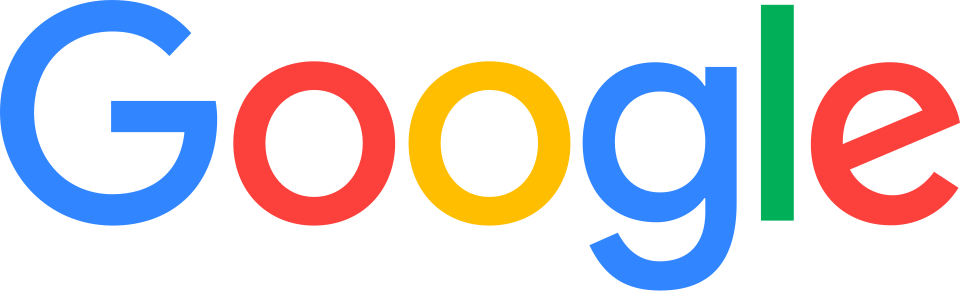
구글 Google구글(Google)은 검색을 핵심으로 스마트폰 운영체제 안드로이드, 유튜브 사업, 클라우드 사업을 하는 미국의 기업이다.구몬교육연구회 Kumon구몬교육연구회(Kumon Institute Education Co.,Ltd.)는 구몬 도루가 설립한 사교육 법인이다.국제 개발 협회 International Development Association국제 개발 협회(International Development Association)는 개발도상국의 경제개발을 돕기 위해 설립된 국제금융기관이다.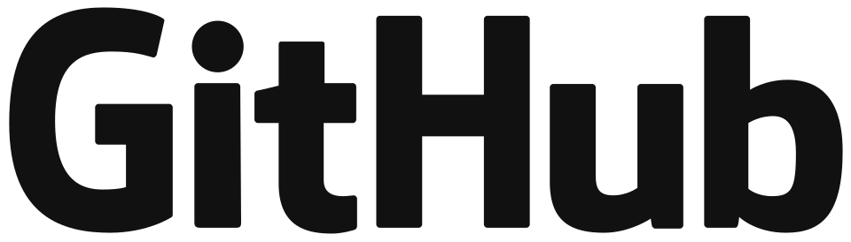
깃허브 GitHub깃허브(GitHub)는 개발자가 코드를 생성·저장·관리·공유할 수 있는 미국의 사유 소프트웨어 개발자 플랫폼이다.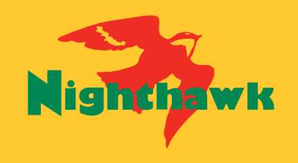
나이트호크 레코드 Nighthawk Records나이트호크 레코드(Nighthawk Records)는 1970년대 미국 세인트루이스에서 시작한 블루스·레게 레이블이다.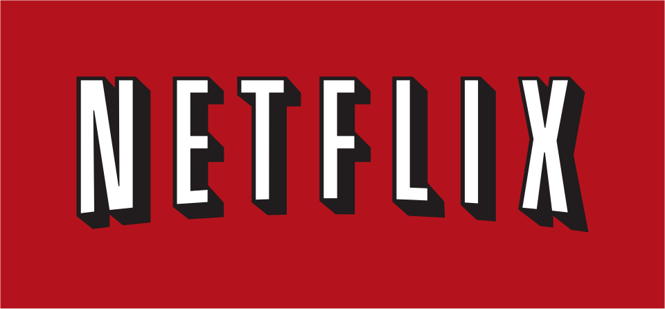
넷플릭스 Netflix넷플릭스(Netflix)는 '인터넷(Net)'과 '영화(Flicks)'를 합성한 이름으로, 영화, 드라마, TV 프로그램 등을 제공하는 스트리밍 엔터테인먼트…뉴스 코퍼레이션 News Corporation뉴스 코퍼레이션(News Corporation)은 뉴욕에 본사를 두었던 미디어 복합기업이었다.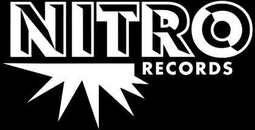
니트로 레코드 Nitro Records니트로 레코드(Nitro Records)는 1994년 디 오프스프링의 덱스터 홀랜드 등이 미국에서 설립한 펑크 레이블이다.달러 제너럴 Dollar General달러제너럴(Dollar General)은 생활필수품과 잡화를 초저가에 판매하는 미국의 달러 스토어 체인이다.닷지 Dodge닷지(Dodge)는 미국의 자동차 브랜드이다.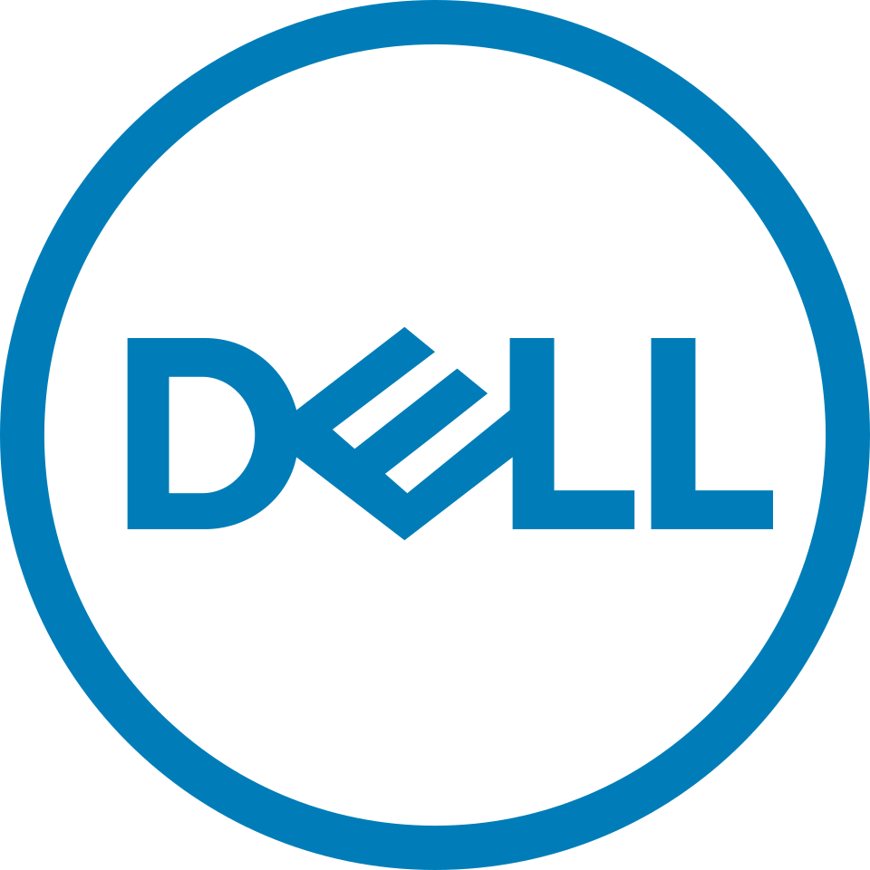
델 Dell델(Dell Inc.)은 개인용 컴퓨터, 서버, 스토리지 장치 등 다양한 컴퓨터 관련 제품과 서비스를 개발, 판매, 수리 및 지원하는 미국의 기술 기업이다.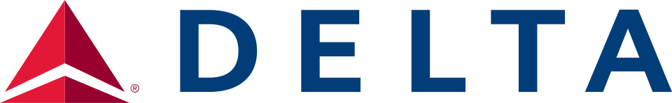
델타 항공 Delta Air Lines델타 항공(Delta Air Lines)은 미국 국적의 항공사이다.도리안 레코딩스 Dorian Recordings도리안 레코딩스(Dorian Recordings)는 1988년 미국 뉴욕주 트로이에서 설립된 클래식·고음악 오디오파일 레이블이었다.드림웍스 애니메이션 DreamWorks Animation드림웍스 애니메이션(DreamWorks Animation)은 미국의 애니메이션 제작사이다.드림웍스 픽처스 DreamWorks드림웍스 픽처스(DreamWorks)는 미국 유니버설시티에 본사를 둔 영화 제작·배급사이다.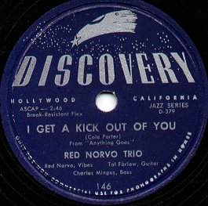
디스커버리 레코드 Discovery Records디스커버리 레코드(Discovery Records)는 1948년 앨버트 마르크스가 미국 할리우드에서 설립한 재즈 레이블이다.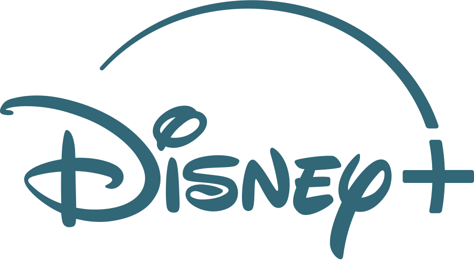
디즈니+ Disney+디즈니+(Disney+)는 디즈니 스트리밍이 소유하고 운영하는 미국의 주문형 비디오 OTT 스트리밍 서비스이다.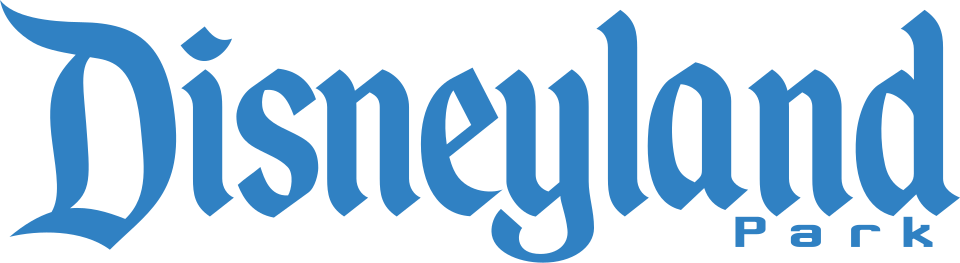
디즈니랜드 Disneyland디즈니랜드(Disneyland)는 월트 디즈니 컴퍼니의 자회사인 월트 디즈니 파크 앤 리조트가 운영하는 테마파크이다.디지털 리얼티 Digital Realty Trust디지털 리얼티(Digital Realty Trust)는 데이터 센터 공간과 서버·네트워크 기반 시설을 제공하고 고객 장비의 입주와 관리를 지원하는 미국 기업이다.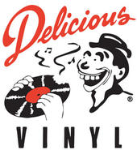
딜리셔스 바이닐 Delicious Vinyl딜리셔스 바이닐(Delicious Vinyl)은 1987년 맷 다이크와 마이클 로스가 미국 로스앤젤레스에서 설립한 힙합 레이블이다.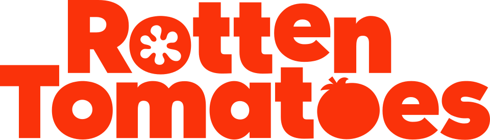
로튼 토마토 Rotten Tomatoes로튼 토마토(Rotten Tomatoes)는 영화 관련 소식, 비평, 정보를 제공하는 웹사이트이다.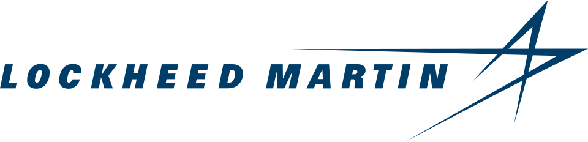
록히드 마틴 Lockheed Martin록히드 마틴(Lockheed Martin)은 미국에 본사를 둔 항공우주·방위산업체이다.리먼 브라더스 Lehman Brothers리먼 브라더스(Lehman Brothers)는 투자은행, 증권 거래, 투자관리, 사모투자와 자산관리 사업을 전개했던 미국의 국제 금융회사이다.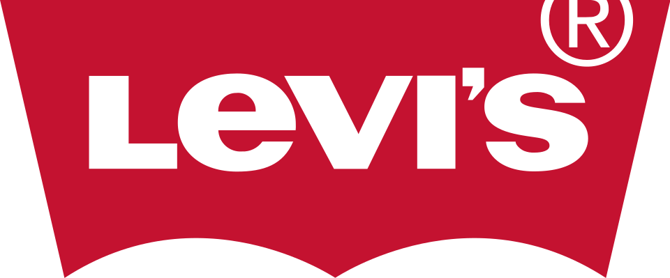
리바이 스트라우스 앤드 컴퍼니 Levi Strauss & Co.리바이 스트라우스 앤드 컴퍼니(Levi Strauss & Co.)는 데님 청바지로 대표되는 미국의 의류 기업이다.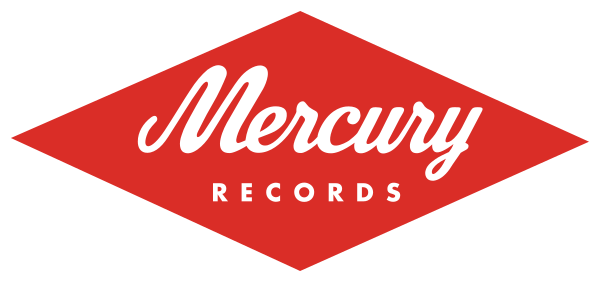
머큐리 레코드 Mercury Records머큐리 레코드(Mercury Records)는 1945년 미국 시카고에서 설립돼 현재 유니버설 뮤직 그룹 산하에서 운영되는 음반 레이블이다.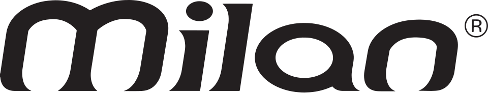
밀란 레코드 Milan밀란 레코드(Milan Records)는 1978년 에마뉘엘 샹보르동이 설립한 영화 사운드트랙 전문 레이블이다.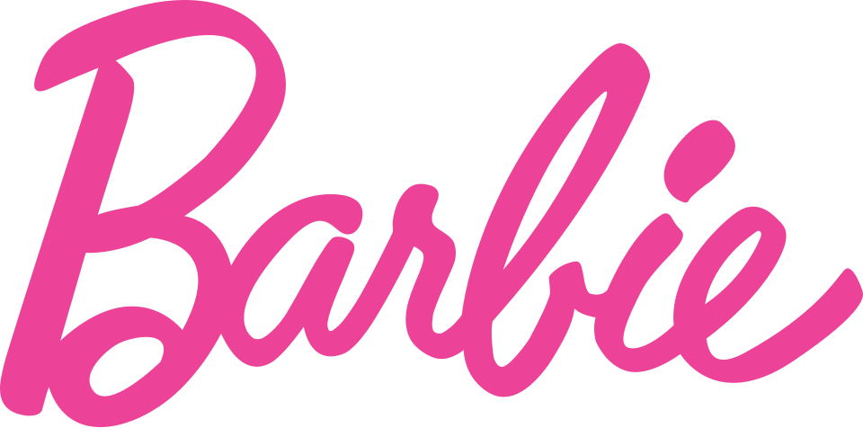
바비 Barbie바비(Barbie)는 미국 캘리포니아주 소재 완구 회사인 마텔이 만든 인형 및 이와 관련된 상품 브랜드이다.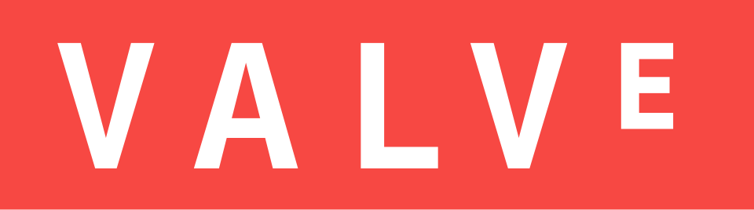
밸브 코퍼레이션 Valve Corporation밸브 코퍼레이션(Valve Corporation)은 미국의 컴퓨터 및 비디오 게임 개발사이다.뱅크 오브 아메리카 Bank of America뱅크 오브 아메리카(Bank of America)는 미국의 민영 상업은행이자 금융지주회사이다.버라이즌 와이어리스 Verizon Wireless버라이즌 와이어리스(Verizon Wireless)는 미국 최대 규모의 이동통신 서비스 사업자이다.버저클리 레코드 Beserkley Records버저클리 레코드(Beserkley Records)는 1973년 매튜 킹 카우프만이 미국 캘리포니아 버클리에서 설립한 파워팝·록 레이블이었다.버크셔 해서웨이 Berkshire Hathaway버크셔 해서웨이(Berkshire Hathaway Inc.)는 워렌 버핏의 투자목적 지주회사이다.베라왕 Vera Wang베라 왕(Vera Wang)은 1990년 뉴욕에서 설립된 미국의 웨딩·패션 디자이너 브랜드이다.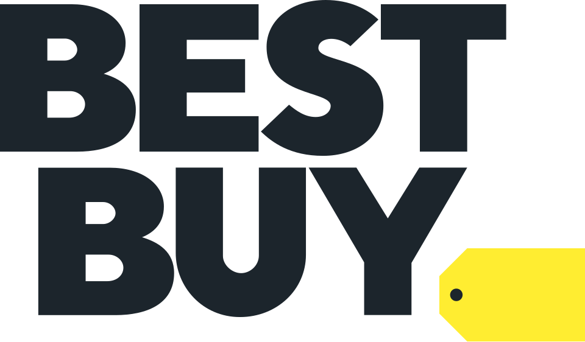
베스트 바이 Best Buy베스트바이(Best Buy)는 미국에 본사를 둔 다국적 가전·전자제품 전문 양판 소매업체이다.보그 Vogue보그(Vogue)는 패션과 미용, 문화, 생활, 디자인, 런웨이를 다루는 미국의 여성 패션 및 라이프스타일 월간지이다.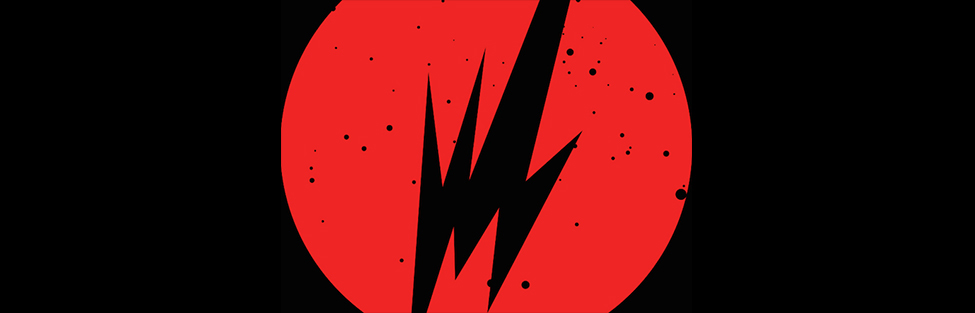
브레인피더 Brainfeeder브레인피더(Brainfeeder)는 2008년 플라잉 로터스가 미국 로스앤젤레스에서 설립한 일렉트로닉·실험음악 레이블이다.블랙 탑 레코드 Black Top Records블랙 탑 레코드는 미국의 미디어·엔터테인먼트 브랜드로, 콘텐츠 포맷, 팬덤, 채널 운영, 지식재산권 확장이 함께 작동하는 영역입니다.블랙록 BlackRock블랙록(BlackRock)은 미국 뉴욕에 본사를 둔 자산 운용 회사이다.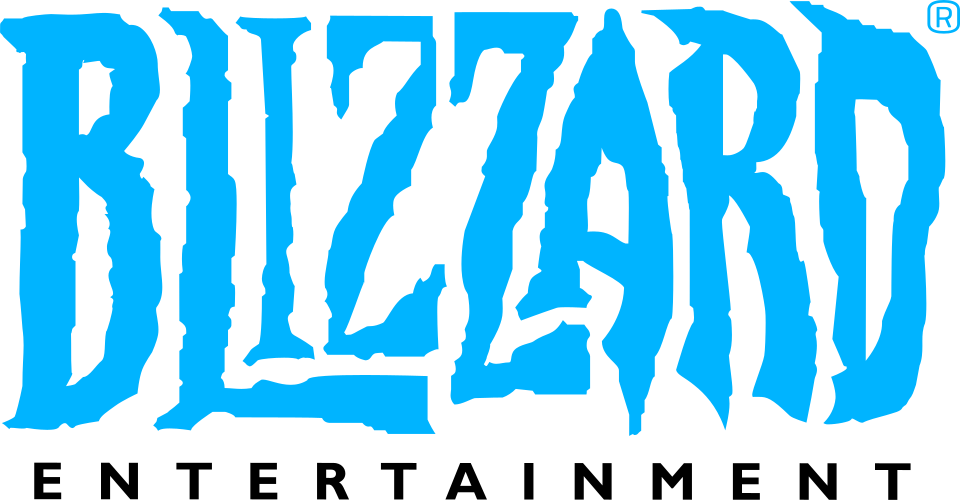
블리자드 엔터테인먼트 Blizzard Entertainment블리자드 엔터테인먼트(Blizzard Entertainment)는 미국 어바인에 기반을 둔 비디오 게임 개발사이다.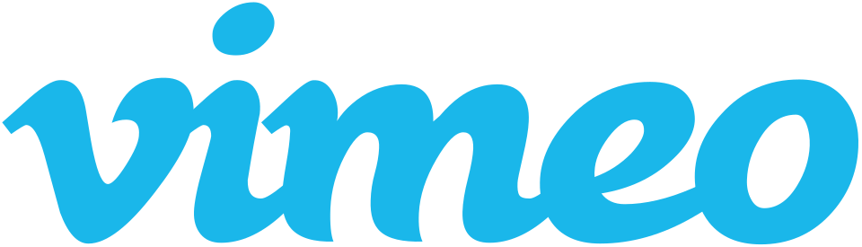
비메오 Vimeo비메오(Vimeo)는 사용자가 직접 제작한 동영상을 업로드하고 공유하며 시청할 수 있는 미국의 동영상 공유 웹사이트이다.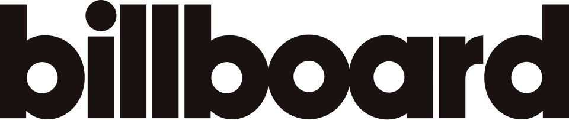
빌보드 Billboard빌보드(Billboard)는 미국의 음악 잡지이다.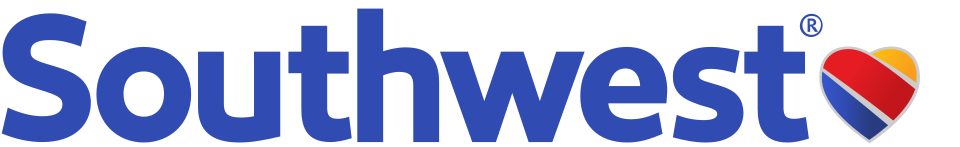
사우스웨스트 항공 Southwest Airlines사우스웨스트 항공(Southwest Airlines)은 미국의 저비용 항공사이다.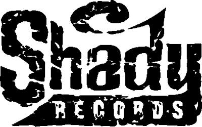
셰이디 레코드 Shady Records셰이디 레코드(Shady Records)는 1999년 에미넴과 매니저 폴 로젠버그가 설립한 미국의 힙합 레이블이다.소니 뮤직 엔터테인먼트 Sony Music소니 뮤직 엔터테인먼트(Sony Music)는 소니 그룹 코퍼레이션이 소유한 미국의 다국적 음악 회사이자 소니 뮤직 그룹의 음반 사업 부문이다.소니 픽처스 엔터테인먼트 Sony Pictures소니 픽처스 엔터테인먼트(Sony Pictures)는 소니그룹이 미국에 설립한 영화·텔레비전 사업 기반의 다국적 미디어 지주회사이자 소니 엔터테인먼트 부문의…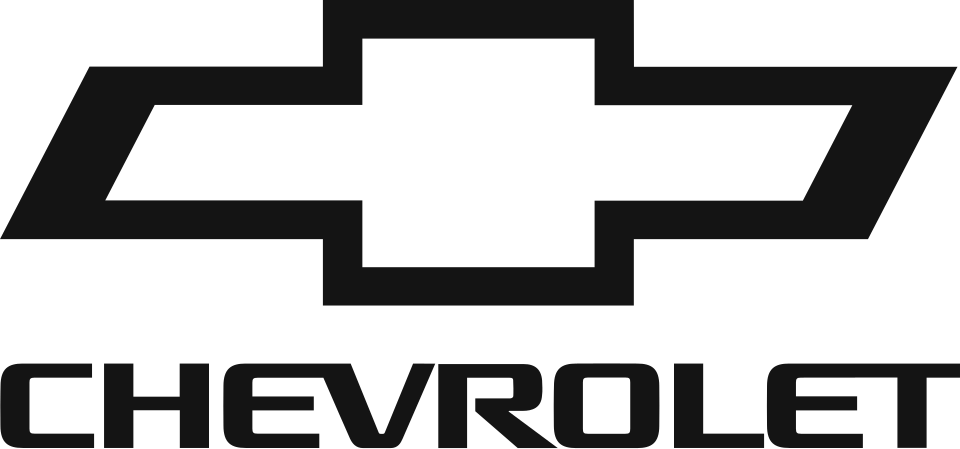
쉐보레 Chevrolet쉐보레(Chevrolet)는 1911년부터 출시된 미국 제너럴 모터스의 자사 자동차 브랜드이다.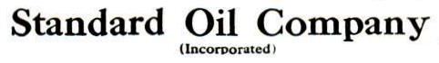
스탠더드 오일 Standard Oil스탠더드 오일(Standard Oil)은 석유의 생산, 운송, 정제, 마케팅 분야에서 월등한 영향력을 가진 회사였다.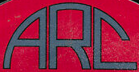
아메리칸 레코드 코퍼레이션 American Record Corporation아메리칸 레코드 코퍼레이션(American Record Corporation, ARC)은 1929년 미국에서 설립된 음반사다.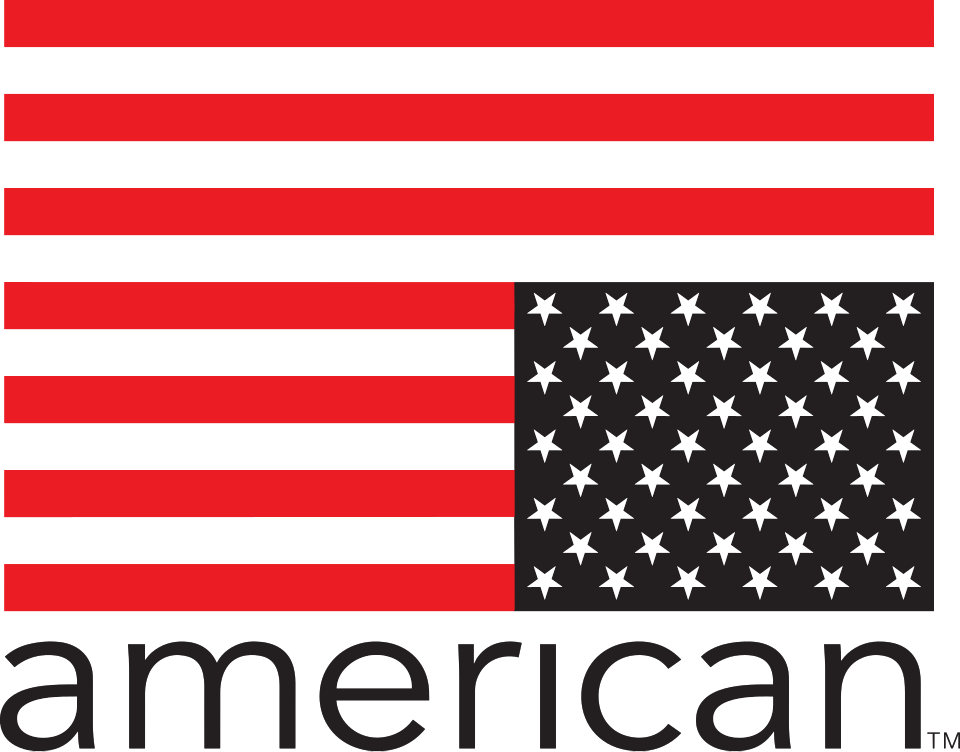
아메리칸 레코딩스 American Recordings아메리칸 레코딩스(American Recordings)는 프로듀서 릭 루빈이 1988년 로스앤젤레스에서 설립한 미국의 레코드 레이블이다.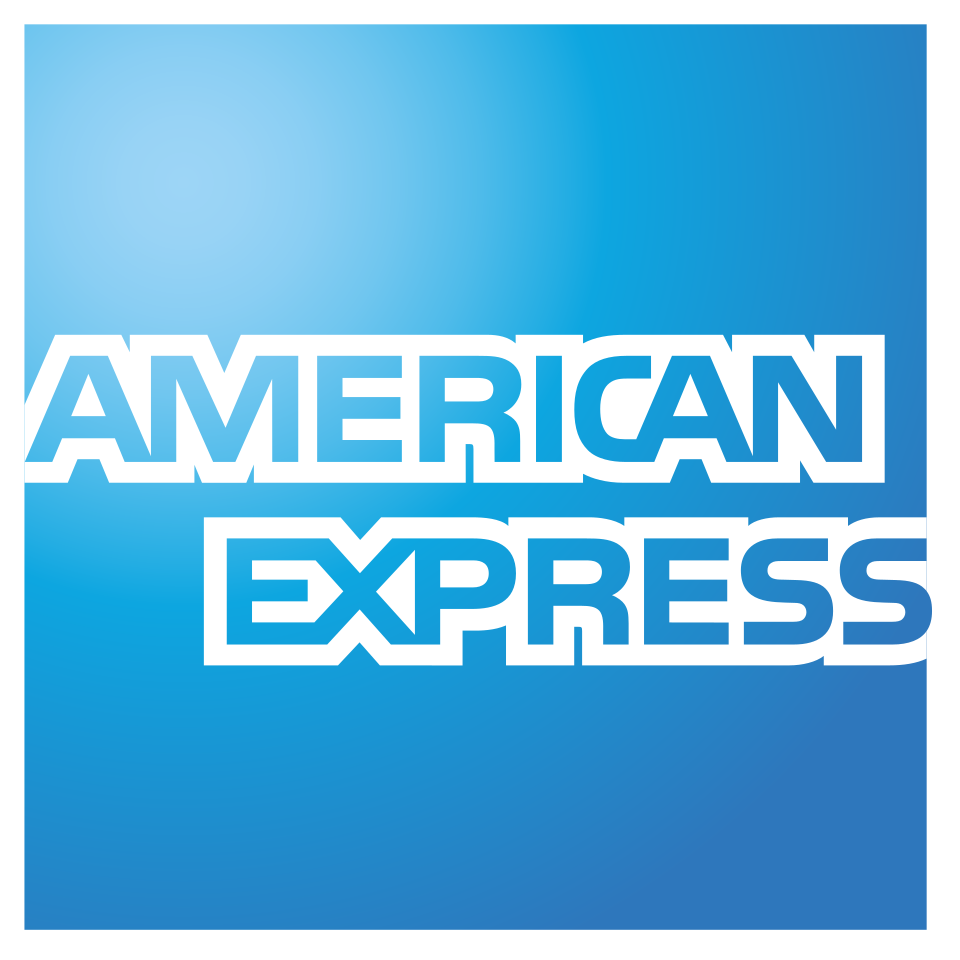
아메리칸 익스프레스 American Express아메리칸 익스프레스(American Express)는 미국 뉴욕에 본사를 둔 다국적 금융 서비스 기업이다.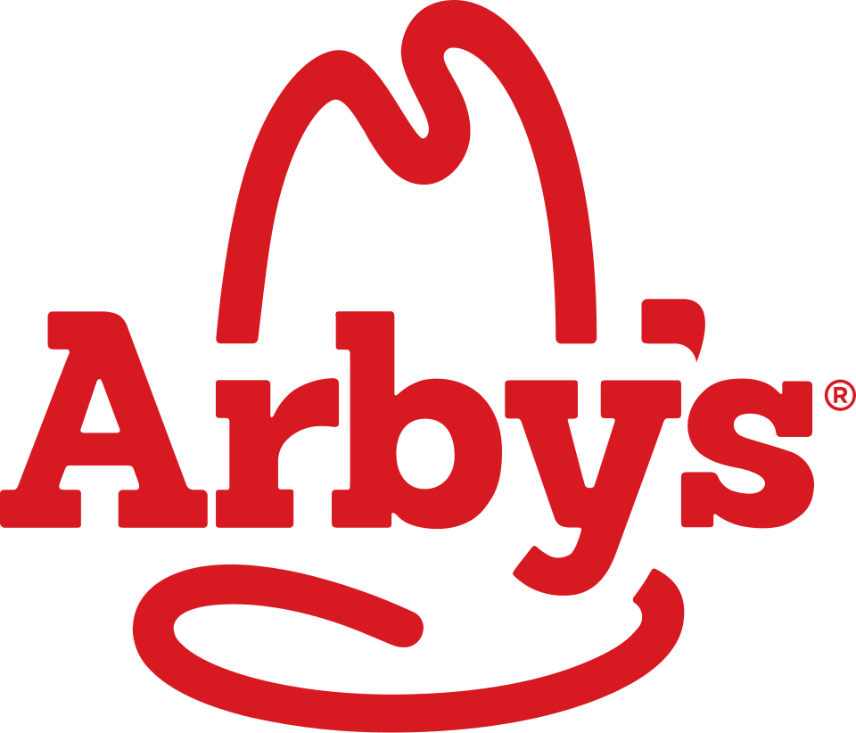
아비스 Arby's아비스(Arby's)는 미국에 본사를 둔 샌드위치 전문 패스트푸드 체인 브랜드이다.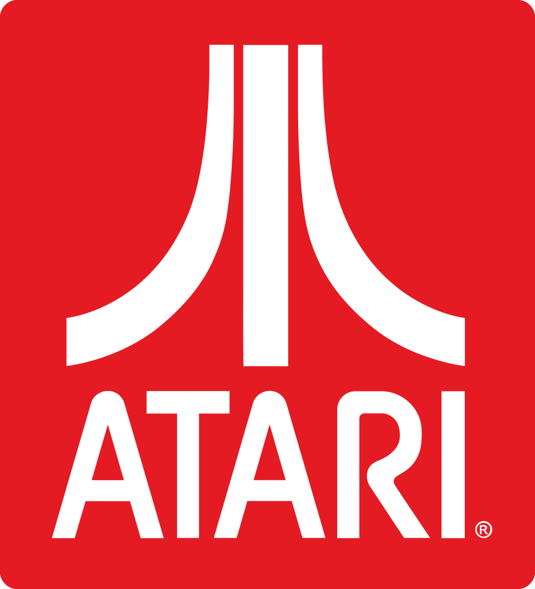
아타리 Atari아타리(Atari)는 미국의 비디오 게임 회사이다.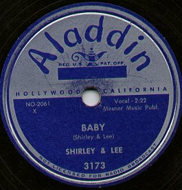
알라딘 레코드 Aladdin Records알라딘 레코드(Aladdin Records)는 1945년 메스너 형제가 미국 로스앤젤레스에서 설립한 R&B·블루스 레이블이다.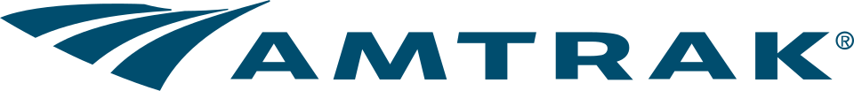
암트랙 Amtrak암트랙(Amtrak)은 와이오밍과 사우스다코타를 제외한 미국 전 지역과 캐나다의 9개 도시에 여객 철도 운송업을 하는 준공영 기업이다.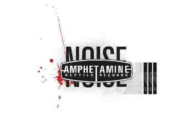
암페타민 렙타일 레코드 Amphetamine Reptile Records암페타민 렙타일 레코드(Amphetamine Reptile Records)는 1986년 톰 헤이즐마이어가 미국에서 설립한 노이즈록 레이블이다.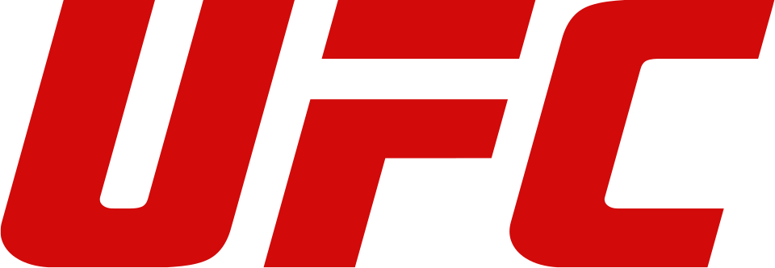
얼티밋 파이팅 챔피언십 Ultimate Fighting Championship얼티밋 파이팅 챔피언십(Ultimate Fighting Championship)은 미국을 기반으로 여러 무술의 기술을 결합한 경기를 운영하는 종합격투기 단체이다.에이비씨-파라마운트 ABC-Paramount에이비씨-파라마운트(ABC-Paramount)는 1955년 American Broadcasting-Paramount Theatres가 설립한 미국의 역사적 음반…에이티오 레코드 ATO Records에이티오 레코드(ATO Records)는 2000년 데이브 매튜스 등이 설립한 미국 뉴욕 기반의 독립 음반 레이블이다.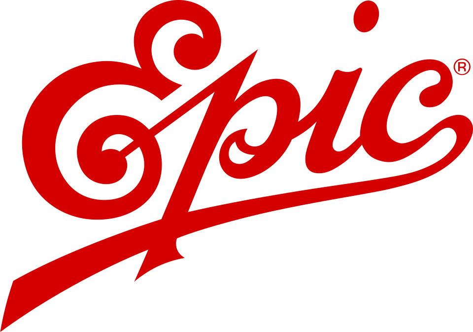
에픽 레코드 Epic Records에픽 레코드(Epic Records)는 소니 뮤직이 소유한 미국의 음반 레이블이다.엑스레이 독 X-Ray Dog엑스레이 독(X-Ray Dog)은 1997년 미국에서 설립된 영화 예고편 음악(트레일러 뮤직) 제작사다.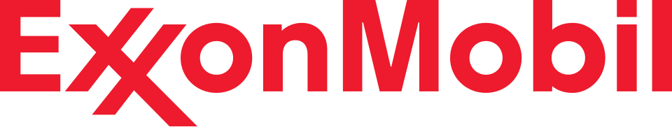
엑슨모빌 ExxonMobil엑슨모빌(ExxonMobil)은 미국의 석유 회사로, 엑슨과 모빌의 합병으로 형성된 기업이다.엔비디아 Nvidia엔비디아(Nvidia)는 미국의 다국적 기술 회사로, 그래픽 처리 장치(GPU)와 시스템 온 칩 유닛(SoC) 등을 설계하고 공급한다.연방준비제도 Federal Reserve System연방준비제도(Federal Reserve System)는 미국의 중앙은행이며, 약칭은 연준국이다.옐로버드 Yellowbird옐로버드(Yellowbird)는 미국 텍사스주 오스틴에서 시작된 핫소스 브랜드로, 2012년 창업자 조지 밀턴과 에린 링크가 만들었다.오라클 Oracle Corporation오라클(Oracle Corporation)은 미국 텍사스주에 본사를 둔 세계적인 소프트웨어 회사이다.우버 Uber우버(Uber)는 스마트폰 앱을 통해 운전기사와 승객을 중개하고 차량 예약과 위치 정보를 제공하는 미국의 승차 공유 서비스이다.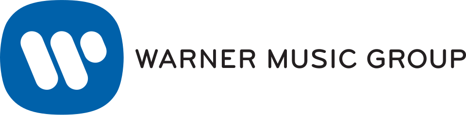
워너 뮤직 그룹 Warner Music Group워너 뮤직 그룹(Warner Music Group)은 1958년 미국에서 설립된 세계 3대 메이저 음반 기업 중 하나인 독립 음악 그룹이다.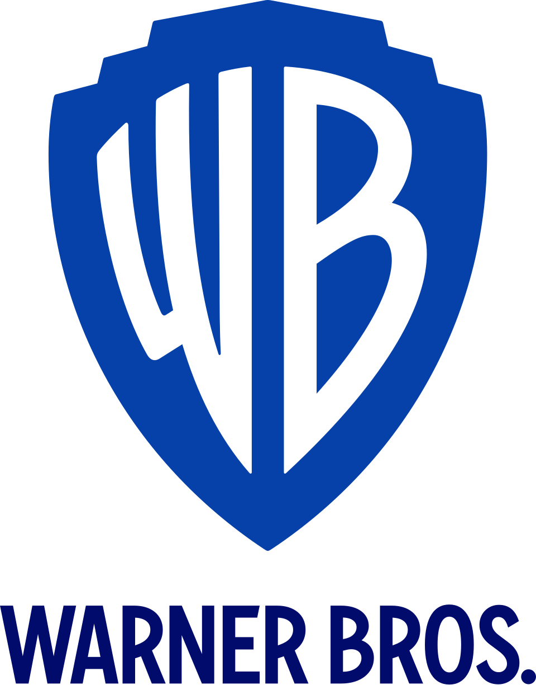
워너 브라더스 Warner Bros. Entertainment워너 브라더스 엔터테인먼트(Warner Bros.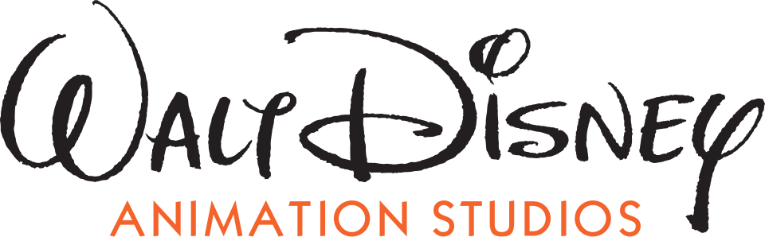
월트 디즈니 애니메이션 스튜디오 Walt Disney Animation Studios월트 디즈니 애니메이션 스튜디오(Walt Disney Animation Studios)는 미국의 애니메이션 제작 스튜디오로, 월트 디즈니 스튜디오를 모기업으로…월트 디즈니 월드 리조트 Walt Disney World Resort월트 디즈니 월드 리조트(Walt Disney World Resort)는 미국 플로리다주 중앙부에 위치한 세계에서 가장 큰 테마파크이다.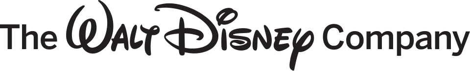
월트 디즈니 컴퍼니 The Walt Disney Company월트 디즈니 컴퍼니(The Walt Disney Company)는 디즈니 영화와 애니메이션을 비롯해 픽사, 마블, 스타워즈 등의 영화와 TV 프로그램 사업을…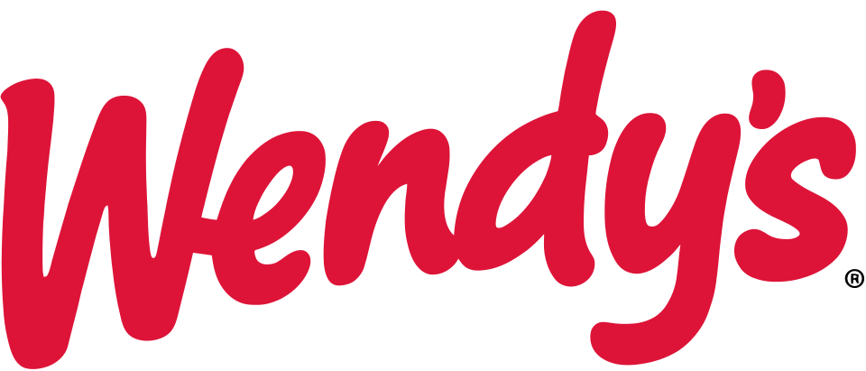
웬디스 Wendy's웬디스(Wendy's)는 데이비드 토머스가 1969년 설립한 국제적인 패스트푸드 체인점이다.웰스 파고 Wells Fargo웰스 파고(Wells Fargo)는 예금, 주택 융자, 데빗 카드 등 은행 업무를 제공하며 미국 전역에 자회사를 둔 다국적 금융 서비스 기업이다.유나이티드 항공 United Airlines유나이티드 항공(United Airlines)은 시카고에 본사를 둔 미국의 항공사로, 여러 국제공항을 허브 공항으로 운영한다.